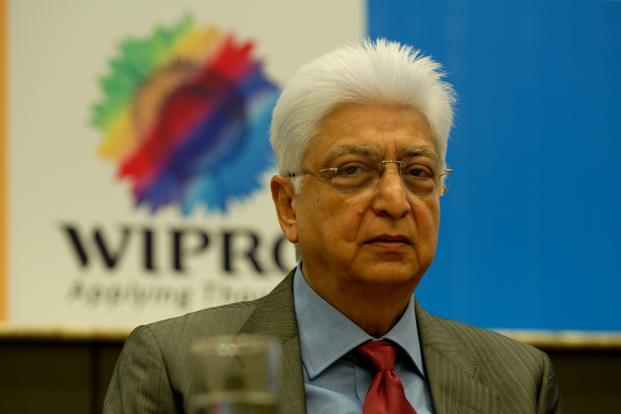
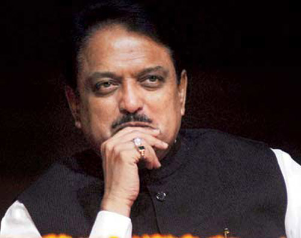
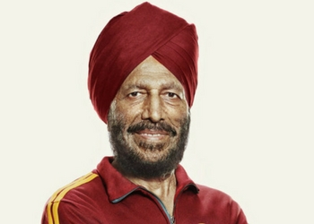

copy right ©2018, The Great India
All Right Reserverd
Developed & Maintained By Pravin Solge
India is a famous country all over the world. Geographically, our country is located to the south of Asia continent. India is a high population country and well protected from all directions naturally. It is a famous country for its great cultural and traditional values all across the world. It contains a mountain called Himalaya which is biggest in the world. It is surrounded by the three big oceans from three directions such as in south with Indian Ocean, in east with Bay of Bengal and in west with Arabic sea. India is a democratic country ranks second for its population. The national language of India is Hindi however almost fourteen nationally recognized languages are spoken here.

|

|
| Indian Flag | Indian Map |
With the decision by Britain to withdraw from the Indian subcontinent, the Congress Party and Muslim League agreed in June 1947 to a partition of India along religious lines. Under the provisions of the Indian Independence Act, India and Pakistan were established as independent dominions with predominantly Hindu areas allocated to India and predominantly Muslim areas to Pakistan.
After India's independence on August 15, 1947, India received most of the subcontinent's 562 widely scattered polities, or princely states, as well as the majority of the British provinces, and parts of three of the remaining provinces. Muslim Pakistan received the remainder. Pakistan consisted of a western wing, with the approximate boundaries of modern Pakistan, and an eastern wing, with the boundaries of present-day Bangladesh.
The division of the subcontinent caused tremendous dislocation of populations; inter-communal violence cost more than 1,000,000 lives. Some 3.5 million Hindus and Sikhs moved from Pakistan into India, andabout 5 million Muslims migrated from India to Pakistan. In Punjab, where the Sikh community was cut in half, a period of terrible bloodshed followed. Overall, the demographic shift caused an initial bitterness between the two countries that was further intensified by each country's accession of a portion of the princely states.
| India Before | India After |
Freedom fighters were those great personalities who consecrated their lives for the cause of attainment of freedom from the colonization of the British. They made many sacrifices; we cannot just imagine the amount of pain, hardships, risks, and opposition they must have gone through or faced in rallying the Indians against the Britishers. How wonderfully versatile and talented they were! Mahatma Gandhi, Subhash Chandra Bose, Bhagat Singh, Udham Sigh, Chander Shekhar, Rajguru, Sukhdev, Mangal Pandey, Rani Laxmi Bai, and many more who sacrificed their everything for the motherland. Subhash Chandra Bose went from all the way from India to Germany by road! He took Hitler's help in raising Indian National Army! How brave and innovative achiever he must have been! He attacked the Britishers from Burma; he captured Andaman an Nicobar islands from the Britishers. The freedom and convenient life we enjoy in the present, we owe it to our freedom fighters. Let’s salute them! 3.7 Read more on Brainly.in - https://brainly.in/question/1196137#readmore

|

|

|
| Mangal Pandey | Bhagat Singh | Subhashchndra Bose |
The 2017 list of Top Indian Business Leaders comprised 100 business owners and 50 executive management. This year, for the first time, Forbes Middle East also highlighted 28 young and talented next generation business leaders who will take the family legacy forward
Forbes Middle East has announced the Top Indian Business Leaders of the Arab World 2017 at an exclusive ceremony on May 11 in Dubai, U.A.E. The event honored business owners, executive management and the next generation of leaders of some of the largest companies in the Arab region.

|

|
 |
| Ratan Tata | Dhirubhai Ambani | Azim Premji |
Narendra Damodardas Modi is an Indian politician serving as the 14th and, since 2014, the current Prime Minister of India. He was the Chief Minister of Gujarat from 2001 to 2014, and is the Member of Parliament for Varanasi.
Vilasrao Dagadojirao Deshmukh was an Indian politician who served two terms as the Chief Minister of the state of Maharashtra. He also served in the Union cabinet as the Minister of Science and Technology and Minister of Earth Sciences. Vilasrao Deshmukh was a Member of Parliament in Rajya Sabha, India
Raj Shrikant Thackeray is an Indian politician, cartoonist and the founder and president of the right-wing Marathi ethnocentric regional political party, the Maharashtra Navnirman Sena in the state of Maharashtra, India.

|
 |

|
| Narendra Modi | Vilasrao Deshmukh | Raj Thakre |
Milkha Singh. Milkha Singh, also known as the 'Flying Sikh', is the most famous Indian sprinter and one of the first sporting icons of the country.
Sachin Tendulkar. The most beloved sportsperson India has ever seen also goes by the name of 'Little Master'.
Chungneijang Mary Kom Hmangte, better known as Mary Kom and Magnificent Mary is an Indian Olympic boxer hailing from Manipur. She is a five-time World Amateur Boxing champion, and the only woman boxer to have won a medal in each one of the six world championships.
|  |

|

|
| Milkha singh | Sachin Tendulkar | P. V. Sindhu |